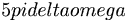

De: La Frikipedia, la enciclopedia extremadamente seria.
De: La Frikipedia, la enciclopedia extremadamente seria. De: La Frikipedia, la enciclopedia extremadamente seria.
| De la serie Elementos químicos: | ||
| ||
| Nombre oficial: | madera | |
| Otros nombres: | caca de árbol, antimetal, madera | |
| Serie alquímica: | No | |
| Descubridor: | Woody Allen | |
| Color en tabla: | café mierda | |
| Presente en: | muchas | |
| Usos: | ... | |
| Estado: | sólidamente sólido | |
| Peso kg/puñao: | Eso no se pregunta... | |
| Estructura: | De madera | |
| Abstracción: | carbon | |
| Humungoso: |  radianes | |
La madera al venir siendo una de las creaciones mas útiles de la naturaleza se convierte en una materia prima para mundo un mundo tan... tan... necesitado como el nuestro
Ciertos filosofos de la madera:
«Si,todos nos enternecemos al ver la pelicula de Pinnocho.Lo que yo me pregunto es que guarradas hacia Geppeto en su jardin para tener un hijo de madera...»
~ {{{2}}}
Según el diccionario tarabaisenese de la república del cambur con jugo de soya la madera es:
"capálipta cumbrcto cutucum pálacsido docnésico patuleimbé"
además de ser orgánico es fisiológicamente superior a cualquier humano y a toda criatura que este leyendo esto puesto que:
...Tiene un hijo con James Woods?
...Mata negros?
...no flota?
...Hay 61 arboles por persona?
...Es inflamable, vamos, que prende? (pruébalo)
...Es la primera causa de muerte en Tazmania?
...Ayudó a la quema de impios y brujas?
La madera tiene 3 usos fundamentales:
1-pisapapeles
2-mierda pinchada en un palo(de madera)
3-jugar a ser harry potta
Autor(es):